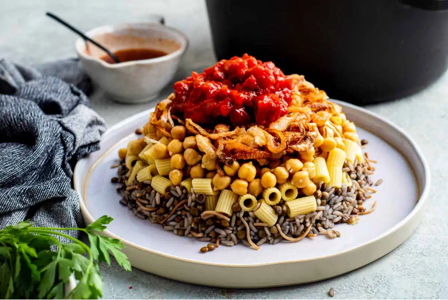

Koshary is a famous Egyptian street food made with layers of rice, pasta, and lentils,
topped with a rich tomato sauce, crispy fried onions, and chickpeas. It is a hearty
and flavorful dish loved across Egypt.

Ingredients
pasta/rice
Chickpeas rinsed and drained
Ditalini pasta
Fried Onions
Onions, sliced thin into rings
Salt
Cornstarch
Vegetable oil
Tomato Sauce
Fried onions
Reserved vegetable oil
Garlic cloves
Tomato paste
Tomato sauce
Water
Salt and pepper
White vinegar
Paprika
Lentil Rice
Brown lentils, rinsed and drained
Rice, rinsed and drained
Vermicelli, toasted
Water
Hot water
Ground cumin
Dukka / Cumin Sauce
White vinegar
Garlic, crushed
Hot water
Ground cumin
Salt, to taste
Ground black pepper
Paprika
Cooking Instructions
Cook the rice in salted water until fully done.
Boil the lentils in water until tender, then drain them.
Cook the pasta in salted boiling water according to the package instructions.
In a pan, cook chopped onions in oil until they become crispy and golden brown.
In another pan, prepare the tomato sauce by cooking garlic in oil.
Add tomato sauce, salt, pepper, and a little vinegar, then simmer for 10 minutes.
Warm the chickpeas in a small pot with a little water.
To serve, place a layer of rice in a bowl, then add lentils and pasta.
Top with tomato sauce, chickpeas, and crispy fried onions.
Serve hot and add extra vinegar or hot sauce if desired.
If you are still having trouble you can refer to this
video